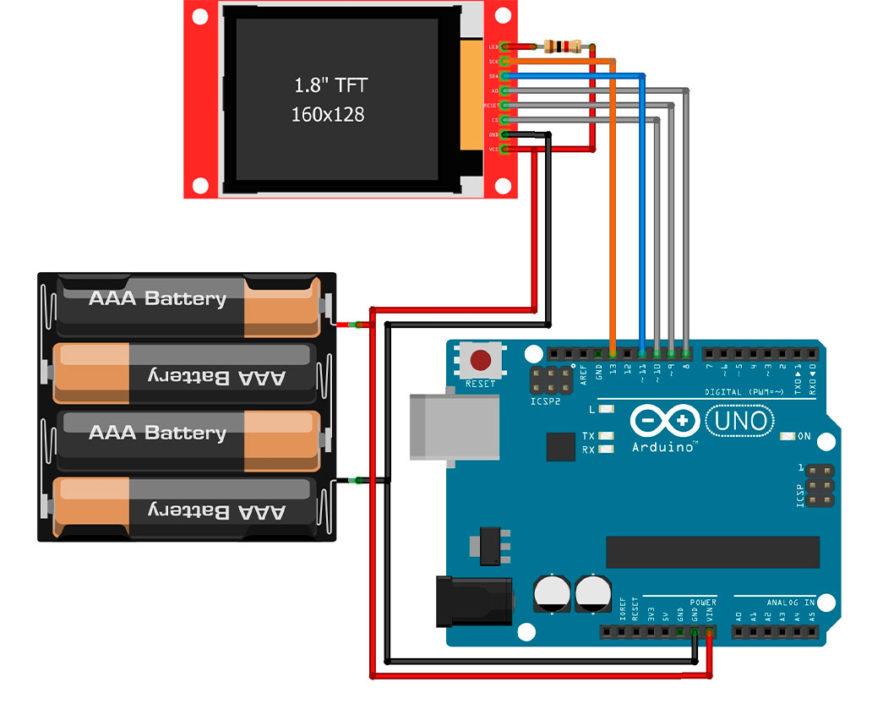

Дисплеи TFT предоставляют возможности для визуализации данных на микроконтроллерах, таких как Arduino Uno. Подключение дисплея с контроллером ST7735 к Uno открывает множество интересных проектов, где вы сможете отобразить информацию с помощью ярких и четких графических элементов.
Дисплей, который мы будем использовать, имеет контроллер ST7735, который обеспечивает быструю передачу данных и облегчает управление пикселями. Его характеристики:
- Разрешение: 128×160 пикселей
- Интерфейс: SPI (Serial Peripheral Interface)
- Цветовая гамма: 262,144 цветов
- Напряжение питания: 5В
Arduino Uno – это одна из самых популярных моделей микроконтроллера в семействе Arduino. Она оснащена микроконтроллером ATmega328P, имеет 14 цифровых входов/выходов, 6 аналоговых входов, UART, I2C, SPI и другие интерфейсы. Основные характеристики Arduino Uno:
- Микроконтроллер ATmega328P
- Рабочее напряжение 5 В
- Частота процессора 16 МГц
- 32 КБ флэш-памяти, 2 КБ ОЗУ
- USB-интерфейс для программирования и питания
СХЕМА ПОДКЛЮЧЕНИЯ
Дисплей работает по интерфейсу SPI и подключается к Arduino Uno с использованием следующих пинов: VCC к 5V для питания, GND к общей земле, SCL к пину 13 (SCK) для передачи данных, SDA к пину 11 (MOSI) для отправки данных, RES к пину 9 для сброса, A0 к пину 8 для управления данными, и CS к пину 10 для выбора устройства. Важно отметить, что на данном дисплее отсутствует пин MISO, так как он не отправляет данные обратно.
Пин LED предназначен для подачи питания на светодиодную матрицу. Он подключается через резистор на 1 кОм для ограничения тока и предотвращения повреждения дисплея.
|
Дисплей |
Arduino Uno |
|
VCC |
5 В |
|
GND |
GND |
|
SCL |
13 (SCK) |
|
SDA |
11 (MOSI) |
|
RES |
9 |
|
A0 |
8 |
|
CS |
10 |
|
LED |
5 В через резистор |
При использовании дисплея, работающего на напряжении 3.3В, необходимо учитывать, что Arduino работает на логике 5В. Поэтому требуется дополнительное оборудование, такое как регулятор напряжения для питания дисплея, а также дополнительные резисторы для подключения пинов к Arduino и обеспечения совместимости логических уровней напряжения.

БИБЛИОТЕКИ
Для работы с дисплеем необходимо установить библиотеку Adafruit ST7735 и Adafruit GFX Library в среде Arduino IDE.
- Откройте Arduino IDE.
- Перейдите в “Sketch” -> “Include Library” -> “Manage Libraries“.
- Найдите библиотеки “Adafruit ST7735” и “Adafruit GFX” и установите их.
ГЕНЕРАЦИЯ ИЗОБРАЖЕНИЯ
Конвертация изображения из формата .png в массив байтов – важный этап для отображения картинки на дисплее при использовании Arduino. Для этой задачи можно воспользоваться следующим скриптом на языке Python:
|
1
2
3
4
5
6
7
8
9
10
11
12
13
14
15
16
17
18
19
20
21
22
23
24
25
26
27
28
29
30
31
32
33
34
35
36
37 |
from PIL import Image
# Открываем изображение PNG
image = Image.open('your_image.png')
# Преобразовываем изображение в формат RGB (если оно не в этом формате)
image = image.convert('RGB')
# Получаем размеры изображения
width, height = image.size
# Создаем массив байтов
byte_array = []
# Перебираем пиксели изображения и добавляем данные в массив байтов
for y in range(height):
for x in range(width):
# Получаем значения цветового канала RGB
r, g, b = image.getpixel((x, y))
# Пример преобразования цветовых данных в байты (зависит от формата дисплея)
# Например, если дисплей использует 16-битный цвет (5 бит на красный, 6 бит на зеленый, 5 бит на синий)
pixel = ((r & 0xF8) << 8) | ((g & 0xFC) << 3) | (b >> 3)
# Добавляем данные в массив байтов
byte_array.extend([pixel >> 8, pixel & 0xFF])
# Сохраняем полученный массив байтов в файл (или используем для вашего проекта)
with open('image_data.h', 'w') as file:
file.write(f'const unsigned int imageWidth = {width};\n')
file.write(f'const unsigned int imageHeight = {height};\n')
file.write('const unsigned char image_data[] PROGMEM = {\n')
for i, data in enumerate(byte_array):
file.write(f'0x{data:02X}, ')
if (i + 1) % 16 == 0:
file.write('\n')
file.write('};') |
Чтобы воспользоваться этим скриптом, следуйте этим шагам:
- Поместите ваше изображение в папку со скриптом.
- Замените ‘your_image.png’ на имя файла в формате PNG, которое вы хотите преобразовать.
- Откройте командную строку или терминал и перейдите в каталог с файлом скрипта и вашим изображением с помощью команды cd "путь\к\папке".
- Запустите скрипт python имя_скрипта.py (замените “имя_скрипта” на название вашего файла)
Чтобы использовать этот скрипт, убедитесь, что на вашем компьютере установлен Python, версия не ниже 3.x, а также библиотека PIL (Python Imaging Library).
ПРИМЕР КОДА
Ниже представлен пример кода для отображения изображения, хранящегося в виде массива байтов в памяти Arduino Uno. Вам понадобится массив байтов, представляющий изображение, и его размеры.
|
1
2
3
4
5
6
7
8
9
10
11
12
13
14
15
16
17
18
19
20
21
22
23
24
25
26
27
28
29
30
31
32
33
34
35 |
#include <Adafruit_GFX.h>
#include <Adafruit_ST7735.h>
#include <SPI.h>
// Пины, к которым подключен дисплей
#define TFT_CS 10
#define TFT_RST 9
#define TFT_DC 8
Adafruit_ST7735 tft = Adafruit_ST7735(TFT_CS, TFT_DC, TFT_RST);
// Пример массива байтов, представляющего изображение
const unsigned char imageData[] PROGMEM = {
// Ваш массив данных изображения
// ...
};
// Размеры изображения
const int imageWidth = 160; // Ширина изображения
const int imageHeight = 128; // Высота изображения
void setup() {
Serial.begin(9600);
tft.initR(INITR_BLACKTAB); // Инициализация дисплея
tft.fillScreen(ST7735_BLACK); // Очистка экрана
// Отображение изображения с координатами (0, 0)
tft.drawBitmap(0, 0, imageData, imageWidth, imageHeight, ST7735_WHITE);
}
void loop() {
// Дополнительный код для работы дисплея или других функций
} |
Необходимо заменить imageData[] на ваш реальный массив байтов, представляющий изображение, и установить правильные значения imageWidth и imageHeight.